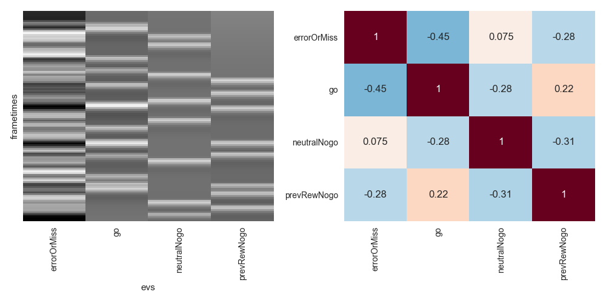

modelCorr¶
A simple command line to show correlations of fMRI Model Design. At present (version 0.0.1) this really doesn’t do more than output a static png and design matrix, though more features are planned including calculation of the model’s variance inflation factor (VIF) for contrasts of interest and possibly some python ports of model optimization. But hey, release [very] early and often.
Usage:
Step 1. Create a Design file where rows are events with at least two columns (see the Lyman Design File spec for more info):
- onset : Time in seconds from trigger (first acquisition of first volume)
- condition: Condition / column name
Optionally, include a 1-based run column to include several split runs, or a duration column to model durations. This does not currently support the addition of pre-computed regressors (derivatives, etc.).
For toy example, this would model picture presentations and the start of blocks, creating a design matrix of 4 columns (blockAStart, blockBStart, picA, and picB):
| Onset | Condition |
| 10 | blockAStart |
| 12 | picA |
| 14 | picA |
| 20 | blockBStart |
| 22 | picB |
| 24 | picB |
Step 2. Run modelCorr from the command line to create design and png of model
correlations.
Example:
modelCorr run1.csv
... outputs a png and csv for the design file run1.csv:
